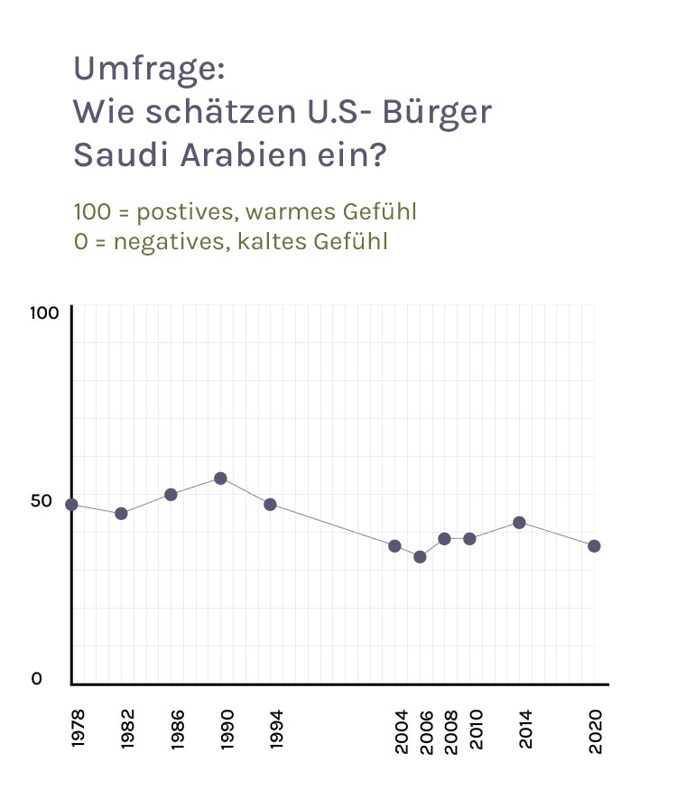

02.02.2023
Von Olivia Fischer
Die USA scheint eigentlich ein schwieriges Verhältnis zu Saudi Arabien zu haben.
Seit der Terrorattacke am 11. September 2001, bei der zahlreiche Saudi Arabische Staatsbürger involviert waren, ist das Missvertrauen der Amerikaner*innen gegenüber Araber und Muslimen extrem gross. Und gleichzeitig ist Saudi Arabien ein Staat, welcher in vielen Hinsichten das komplette Gegenteil der USA ist.
Allen Wiederständen zu trotz: Die beiden Staaten sind eng verbrüdert
Die Zahlen sagen alles: AmerikanerInnen mögen Saudi Arabien nicht.
In der Umfrage des Chicago Council on Global Affairs¹ vergeben sie dem Land meistens 30 bis 40 von 100
Punkten.
Doch trotz ihrer Unterschiede gibt es zwei Dinge, welche die Länder stark verbinden: Waffen und Öl.
Als grösster Waffenkäufer der USA² ist Saudi Arabien ein extrem wichtiger Handelspartner. Im Gegenzug
liefert Saudi Arabien der USA Sicherheit auf dem Ölmarkt und einen strategischen Verbündeten im Nahen
Osten.
Wie es über die Jahre zu dieser Verbrüderung kam, sieht man wunderbar anhand der Umfrage:
Good Times,
trotz Ölkrise
Ende der 70er Jahre bekommt Saudi Arabien eine relativ gute Wertung von der USA: 44 Punkte.
Wieso?
Seit den 30er Jahren, in denen die USA in Saudi Arabien erstmalig Öl entdeckte, gab es stets eine rege
Zusammenarbeit zwischen den Ländern, von der beide profitierten.
Doch 1973 brodelt es zum ersten Mal gewaltig zwischen den beiden Mächten: Im Jom-Kippur-Krieg
unterstützt die USA Israel, während sich Saudi Arabien auf die Seite Palästinas schlägt.
Um die USA zu stoppen, starten Saudi Arabien und Verbündete ein Erdölembargo. Dadurch, dass sie kein
Erdöl mehr liefern, stiegen die Preise weltweit bis über 300% und in der USA kommt es zu einer
einschneidenden Energiekrise³.
Doch der Konflikt zerstört die Beziehung der beiden Nationen nicht, er machte sie nur noch stärker.
Saudi Arabien hob das Embargo auf, als die USA Israel dazu überredete, mit Syrien zu verhandeln. Durch
die Preiserhöhung des Erdöls war Aramco (die staatliche Erdölfirma) und damit auch Saudi Arabien reicher
denn je. Mehr Geld für amerikanische Waffen.
So wurde ein paar Monate später bereits ein neuer Vertrag⁴ zwischen den beiden Parteien unterschrieben,
welcher eine weitreichende Vereinbarung über eine erweiterte wirtschaftliche und militärische
Zusammenarbeit garantierte.
Ein Herz und eine Seele:
Die USA und Saudi Arabien im zweiten Golfkrieg
Wir schreiben das Jahr 1990, und die Meinungsumfrage erreicht ihr All-Time-High. Die Amerikaner*innen
vergeben Saudi Arabien ganze 53 Punkte, zum ersten und letzten Mal in der Geschichten der beiden Staaten
ein positives Urteil.
Wieso?
Im Zuge des zweiten Golfkrieges droht Irak, Saudi Arabiens Ölbestände anzugreifen. Dies lässt die USA
nicht zu. Im Laufe des Krieges schickt sie insgesamt 500 000 amerikanische SoladtInnen nach Saudi
Arabien⁵.
Diese Hilfe in Kriegszeiten stärkt die Beziehung der beiden Staaten extrem.
Das Foto zeigt US-Präsident Bush beim Thanksgiving-Essen mit amerikanischen Truppen in Saudi Arabien, während der Operation Desert Shield 1990.
Der Moment, der alles veränderte: 9/11
Am 11. September 2001 werden mit vier entführten Flugzeugen Selbstmordattentate gewaltigen Ausmasses
ausgeführt. Anhänger des Terrornetzwerkes Al-Aqida töten dabei 2996 Menschen in der USA.
Dies war der bisher schwerste Riss in der Beziehung zwischen Amerika und der ganzen arabischen Welt.
Die Stimmung in den Medien aber auch den Völkern ist klar: Die Amerkaner*innen haben etwas gegen Saudi
Araber, und auch in Saudi Arabien herrscht anfangs grossen Missmut gegenüber der USA. Unsere
Meinungsumfrage geht in ein All-Time-Low mit nur 34 von 100 Punkten. Doch trotz diesem zerrütteten
Verhältnis bleiben die Geschäftsbeziehungen der beiden Ländern vorhanden.
Die Ruhe nach dem Sturm: Saudi Arabien und die USA nähern sich wieder an
Nach dem grossen Tief in den ersten zehn Jahren des neuen Jahrtausends, sieht es plötzlich wieder besser
aus zwischen den beiden Staaten.
9/11 hat die Bevölkerung der USA so geprägt, dass sie dem Land wohl nie mehr so positiv gestimmt sind
wie in den 90ern. Dem zum Trotz wird hinter verschlossenen Türen eifrig Handel betrieben.
Es ist 2016, wir tauchen ein in das Wahljahr von Donald Trump: Dieser hat durch seine langjährigen
politischen Aktivitäten eine enge Beziehung zur Saudi Arabischen Herrscherfamilie. Im August statten der
de facto Herrscher von Saudi Arabien, Mohammad Bin Salman (MbS), und allierte Trump einen Besuch ab.
Sie machen ihm ein Angebot: Sie wären willig ihn stark zu unterstützen in seinem Wahlkampf⁶. Dies ist
allerdings illegal in der USA. Gewisse Quellen besagen trotzdem, dass Saudi Arabien und UAE Millionen in
die Wahlkampagne von Trump investierten.
Und auch sonst wird fleissig Handel betrieben. In den 2010er Jahren werden mehrere monumentale
Waffendeals⁷
zwischen den beiden Parteien abgeschlossen, und Saudi Arabien etabliert sich als grösster Waffenkäufer⁸
der USA.
Der Wendepunkt:
Wird die USA Saudi Arabien loslassen müssen?
Die Meinungsumfrage zeigt plötzlich den zweittiefsten Wert überhaupt an.
Es passieren gleich zwei Dinge, welche die amerikanische Bevölkerung umgestimmt haben:
Es wird klar, dass die in den vergangenen Jahren verkauften Waffen wahrscheinlich auch für
Kriegsverbrechen in Jemen⁹ genutzt werden. Dies führt zu verschiedenen Protesten in der USA.
Und im Jahr 2019 spitzt sich die Lage noch mehr zu: Der Saudi-Arabische Journalist Jamal Khashoggi wird
brutal ermordet und zerstückelt in einem Konsulat in Instanbul¹⁰. Anscheinend im Auftrag von Kronprinz
Mohammad bin Salman (MbS).
Die News gehen um die Welt - ein schwieriger Moment für die
USA - Saudi Arabien Beziehung.
Und heute?
Mit Biden als Präsident hat sich das Blatt gewendet: Zum ersten Mal seit langer Zeit ist die Beziehung
zwischen den beiden Staaten wieder am schwanken.
Wieso? Öl.
Im Zuge des Ukraine-Krieges probieren die USA, Europa und andere Aliierte alles, um die Erdölpreise tief
zu halten. Denn höhere Preise bedeuten mehr Geld für Russland. Präsident Biden reiste deshalb im Juli
extra nach Jiddah, um MbS darum zu bitten, mehr Erdöl zu produzieren, was Preise drosseln würde.
Doch nur zwei Monate später gibt Saudi Arabien bekannt dass sie genau das Gegenteil tun werden: Sie
wollen
weniger produzieren, um die Preise noch mehr in die Höhe zu treiben. Dies alles erinnert uns an die
Erdölkrise in den 70ern.
Die Frage ist nun die folgende:
Kann Saudi Arabien auch dieses
Mal mit solchem
Verhalten davonkommen?
Oder wird es langsam Zeit für die USA, ihre Bruderschaft mit dem Land zu beenden?